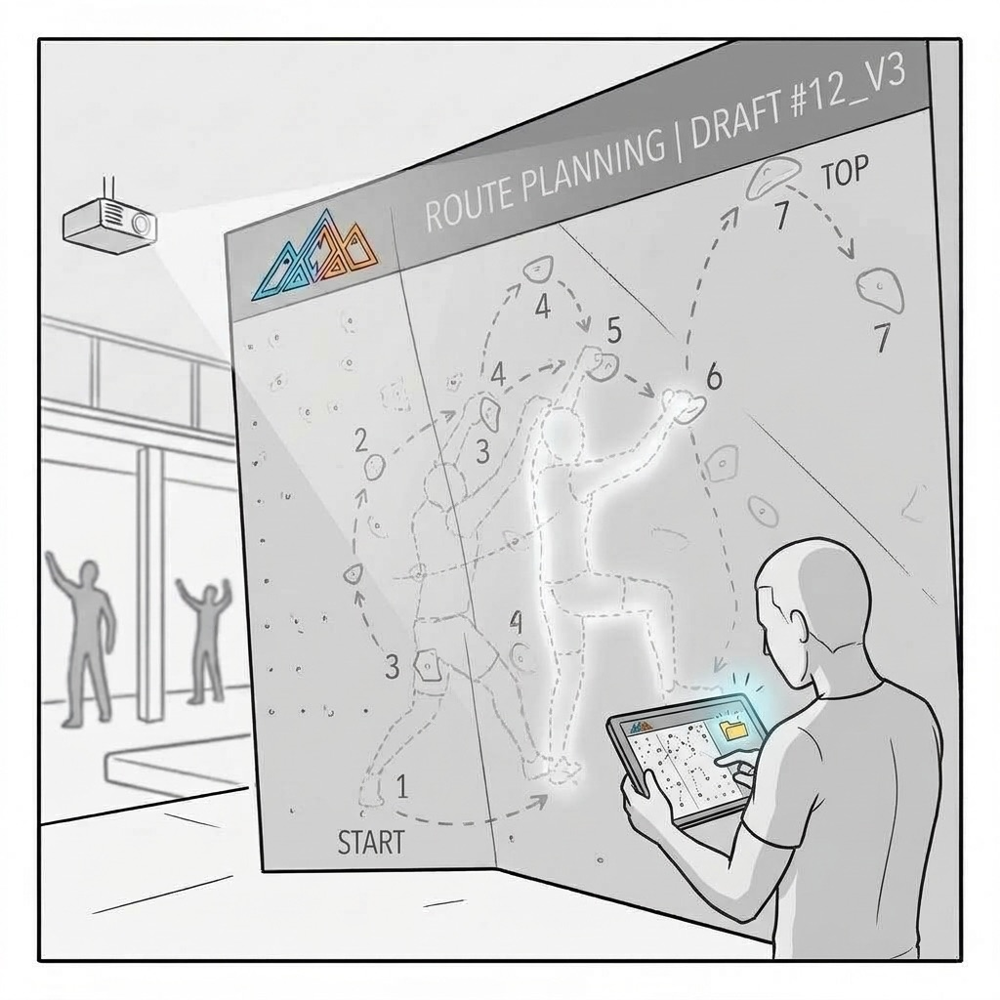

Project image

Idea
Before a reset, setters plan hold positions, colors and sequences in a tablet interface, then project the route onto the bare wall. This helps the team check placements and coordinate a reset without relying on tape or measurements alone.
Route planning
Arrange holds and assign colors in a digital wall view.
Wall preview
Project planned hold positions at the corresponding locations on the wall.
Shared setter library
Save, compare and reuse route plans across setting sessions.
Tech stack
- Reuses the Permanent Interactive Wall projector, calibration and PC
- Wall mesh scan for accurate hold placement
- Tablet interface for route planning and the shared setter library
Requirements & risks
- Projection needs to be calibrated to the wall geometry.
- The projector must have a clear view while setting.
- Calibration drift needs a quick recalibration routine.
Value
- Helps setters plan and review routes before and during a reset.
- Creates a reusable digital record of route plans.
- Can reduce reliance on tape and manual measurements.